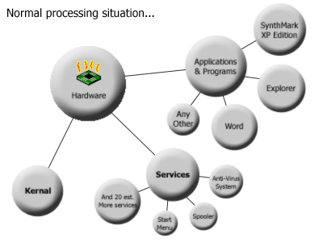
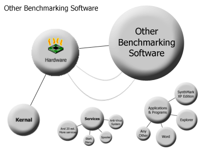

|
The History of
Benchmarking See Also: Benchmarking with SynthMark
XP, Back to Main. Benchmarking is a word used in many industries today, mostly
for determining an average for a specific value. In this case, benchmarking
is turning your computers performance in specific areas of processing into a
numerical value for overall performance; hence the word ‘average’
in the description of the word. In the rest of this chapter we try give you a
little background on benchmarking with other software programs. Benchmarking programs in general: The main task of a benchmarking program is to exert maximum
pressure on your computers hardware system, by using a software program that
demands maximum resources from your hardware. Understand that your computers
processor works through what is called time-slices, these at a hardware level
are divided into oscillations of a quartz crystal timer. These time-slices
determine what megahertz your computer runs at, however as history has shown
repeatedly, the number if megahertz your computer runs at is not always
proportional to your computers performance. There are many other factors you have to taking into
consideration when determining your computers performance. When you hear of
advertisements saying over “25 billion calculations per second”
for a processor, many people forget that even moving your mouse takes a few
million calculations, and some processors will take fewer time-slices to
process mouse movements than others. This is because by nature of design,
some processors do more work per Hz than others. Most benchmarking systems seek to measure the number of
calculations per second your CPU can perform, or your CPU’s floating
point unit which is mostly responsible for mathematical calculations, and
many other aspects of your computer are benchmarked. These benchmarking
systems use measurements like MOPS (million operations per second) and other
measurements which we believe are out of date, simply because they never
indicated the exact performance you actually receive when using your computer
for anything, games, word processors, whatever! The operating system kernel: We mentioned to you above that the number of hertz your
processor runs at are the number of time-slices that device has, and this is
true, but before your programs or any applications you have open can access
any of this processing time, it has to go through your operating systems
kernel first. The kernel is responsible giving you that wonderful word,
MULTITASKING! By design your hardware cannot multi-task at all, even though
they sometimes have more than one pipeline (sets of time-slices), actual
multi-tasking is something our home PCs and office computers just cannot do. So our operating systems kernel plays Mr. Policeman with your
computers processor time-slices, giving time-slices of its own design to each
program on your computer. So what are your applications actually getting?
They are getting time-slices of a system using time-slices of its own to
function, busy splitting demand of your applications processing needs into
time-slices for your computer hardware to process with its own time-slices
and pipelines and branch lengths to get the job done! As if that is not bad
enough, do you think when your computer boots and your operating system has
finished loading that your processor is suddenly doing nothing? Have your
ever heard of the word Anti-virus system? The answer is far from no.  The time-slice tragedy: As you can see by the diagram, the applications your are running only get a smaller section of your full
hardware’s potential. This is the hard truth that other benchmarking
systems do not take into account. They simply eliminate the requirements for
the services and any other applications running on your computer, which is
not what any other programs can do, or risk the operating system crashing.
Example: you are playing ID software’s famous Quake 3, and they had
designed it like a non-AndyFutcher benchmarking system, the network would not
work, because the service controlling your connection is being with held its
required time slices, and the same applies for your music, sound effects and
more! But, I hear your say: Well explain the CPU usage monitors? And how come my sometimes
they say that I am using zero percent of my CPU? What that system is
measuring your how many of it’s own available time-slices are available
over how many are possible, and so even then, your processor is still being
used quite heavily. What the other benchmarking programs do: It’s quite simple really, they use techniques to oppress
the other programs demand on your computer, and to a certain extent most of
the background services as well, thereby giving you scores that are more
related to your computers hardware performance. This is all very well but it
is still not measuring what your applications actually receive from your
hardware.  See the next section called Benchmarking
with SynthMark XP to hear how we do it! |